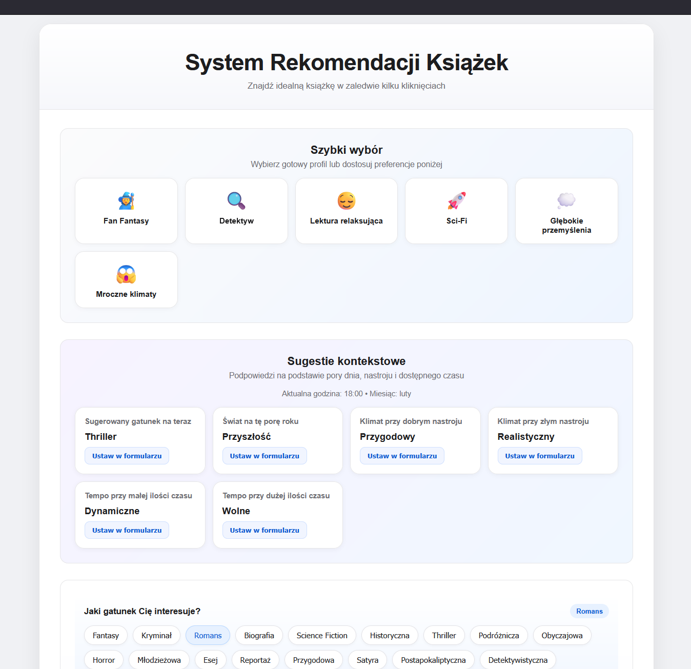
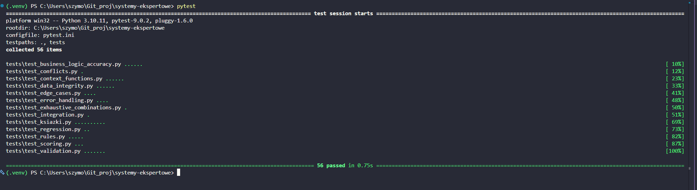

Systemy Ekspertowe — Sprawozdanie z projektu
Dokumentacja techniczna i merytoryczna projektu
| Rok akademicki: | 2025/2026 |
| Technologia: | Python · Flask · rule-engine · JavaScript |
| Wersja: | 1.0 (luty 2026) |
Celem projektu było stworzenie systemu eksperckiego wspomagającego wybór książki. Problem doboru lektury jest typowym problemem rekomendacyjnym: ogromna liczba dostępnych tytułów, zróżnicowane gusta czytelnicze i zmieniający się kontekst (nastrój, pora dnia, dostępny czas) sprawiają, że ręczne przeszukiwanie katalogów jest czasochłonne i często nieefektywne.
System rozwiązuje ten problem, kodując wiedzę ekspercką w postaci reguł przypisanych do poszczególnych tytułów. Na podstawie preferencji podanych przez użytkownika (gatunek, klimat, tempo, długość, świat, miejsce akcji, wiek bohatera) system ocenia każdą książkę punktowo i prezentuje ranking Top 3 wraz z wyjaśnieniem, dlaczego dany tytuł pasuje do podanego profilu.
Wybór domeny „rekomendacja książek" jest uzasadniony: dziedzina jest intuicyjnie zrozumiała, posiada dobrze zdefiniowane atrybuty opisujące obiekty (tytuły literackie) oraz preferencje użytkownika, co pozwala na czytelne i kompletne zakodowanie wiedzy eksperckiej.
rule-engine.Python 3.10+, Flask 3.x, flask-cors, rule-engine 4.x, pytest, HTML5, CSS3, Vanilla JavaScript (ES6+), JSON.
| Komponent | Technologia | Rola w projekcie |
|---|---|---|
| Backend / API | Flask (Python) | Serwer HTTP, REST API, serwowanie plików statycznych |
| Silnik reguł | rule-engine | Parsowanie i ewaluacja wyrażeń warunkowych na słownikach |
| Baza wiedzy | JSON | Deklaratywne przechowywanie reguł poza kodem |
| Frontend | HTML/CSS/JS | Interaktywny interfejs użytkownika (SPA) |
| Testy | pytest | Testy jednostkowe i integracyjne |
Domeną systemu jest literatura piękna i popularna. Obiektami wiedzy są konkretne tytuły książkowe, a wiedzą ekspertową są reguły opisujące, kiedy dany tytuł pasuje do profilu czytelnika. Profil czytelnika jest opisany siedmioma atrybutami:
| Atrybut | Typ wartości | Przykładowe wartości |
|---|---|---|
gatunek | string (enum) | fantasy, kryminal, romans, thriller, science_fiction, horror, biografia, reportaz, satyra, postapo, …(21 wartości) |
klimat | string (enum) | mroczny, lekki, inspirujacy, refleksyjny, epicki, psychologiczny, przygodowy, gotycki, humorystyczny, tajemniczy, …(13 wartości) |
tempo | string (enum) | wolne, umiarkowane, dynamiczne |
dlugosc | string (enum) | krotka, srednia, dluga, bardzo_dluga |
swiat | string (enum) | magiczny, przyszlosc, wspolczesny, historyczny |
wiek_bohatera | string (enum) | mlody, dorosly, starszy, brak |
miejsce | string (enum) | miasto, wies, swiat, las, zamek, szkola, dzungla, europa |
Każdy atrybut jest opcjonalny – użytkownik może pominąć te, na których mu nie zależy. System przypisuje punkty tylko za spełnione reguły, więc brak wartości danego atrybutu po prostu nie aktywuje powiązanych reguł.
Baza wiedzy jest przechowywana w pliku KSIAZKI_BAZA.json. Struktura pliku:
{
"books": [
{
"name": "Tytuł - Autor",
"rules": [
{
"condition": "gatunek == 'fantasy'",
"points": 30,
"description": "Czytelnik uwielbia fantastykę"
},
...
]
},
...
]
}condition), liczbę punktów (points)
oraz opis słowny (description).
Punkty przyznawane w regułach są zróżnicowane i odzwierciedlają wagę danej cechy dla rekomendacji:
| Liczba punktów | Semantyka | Przykład |
|---|---|---|
| 30 pkt | Cecha kluczowa (gatunek, świat, klimat główny) | gatunek == 'fantasy' |
| 20 pkt | Cecha ważna (miejsce, wiek bohatera) | wiek_bohatera == 'dorosly' |
| 10 pkt | Cecha uzupełniająca (tempo, długość) | tempo == 'dynamiczne' |
Maksymalny możliwy wynik dla jednej książki wynosi 100 pkt (suma 5 reguł o max. wartości 30 pkt). W praktyce typowy wynik graniczący z rekomendacją to 40–70 pkt.
gatunek == 'fantasy' (+30 pkt) – dopasowanie kluczowego gatunku.swiat == 'magiczny' (+30 pkt) – preferuje rozbudowane światy magiczne.gatunek == 'science_fiction' i swiat == 'przyszlosc' (+30 pkt każdy) – dwie niezależne reguły sumują się do 60 pkt.gatunek == 'kryminal', klimat == 'mroczny', miejsce == 'europa' (+30, +20, +30 pkt) – 80 pkt z cech kluczowych.klimat == 'gotycki' i miejsce == 'zamek' (+30, +20 pkt) – unikalna kombinacja wyróżniająca tytuł na tle innych horrorów.
Silnik zaimplementowany jest w dwóch modułach: app.py (wersja serwerowa z
REST API) i KSIAZKI_razem.py (wersja skryptowa/CLI). Oba moduły mają identyczną
logikę wnioskowania. Podział na warstwy wygląda następująco:
Loader (load_books_from_json) → Context (resolver + funkcje) → Evaluator (rule.matches) → Scorer (score += pts) → Ranker (sorted + Top3) → Explainer (reasons[])
| Moduł/funkcja | Odpowiedzialność |
|---|---|
load_books_from_json() | Wczytuje plik JSON, mapuje pola condition/points/description na krotki (expr, pts, explanation) |
resolver(thing, name) | Udostępnia zmienne preferencji i funkcje własne dla silnika reguł; zwraca None zamiast wyjątku dla brakujących kluczy |
rule_engine.Context | Kontekst wykonania reguł z podpiętym resolverem |
rule_engine.Rule.matches() | Ewaluuje wyrażenie warunkowe na słowniku preferencji; zwraca wartość logiczną |
wybierz_ksiazke() | Główna funkcja: iteruje po książkach i regułach, zlicza punkty, buduje listę uzasadnień, sortuje ranking |
matches()
Jest podstawową metodą ewaluacji. Przyjmuje obiekt (słownik z preferencjami) i zwraca
True, jeśli wyrażenie reguły jest spełnione. W projekcie każda reguła jest
sprawdzana metodą matches(preferencje) wewnątrz pętli:
rule = rule_engine.Rule(expr, context=context)
if rule.matches(preferencje):
score += pts
reasons.append(f"+{pts} pkt: {explanation}")| Operator | Przykład zastosowania | Semantyka |
|---|---|---|
== | gatunek == 'fantasy' | Dokładne dopasowanie gatunku |
!= | tempo != 'wolne' | Wyklucza wolne tempo (w testach) |
in | gatunek in ['fantasy', 'romans'] | Przynależność do listy wartości |
and | gatunek == 'kryminal' and klimat == 'mroczny' | Koniunkcja warunków |
Reguły mogą odwoływać się do pól, które użytkownik pominął. Standardowo
rule-engine rzuca wyjątek SymbolResolutionError.
W projekcie problem jest rozwiązany na dwa sposoby:
None dla nieznanych kluczy, co powoduje, że
reguła ewaluuje się do False bez wyjątku (podejście przyjęte w
app.py).app.py pętla po regułach jest dodatkowo opakowana w try/except,
co zapewnia odporność nawet na nieprawidłowe wyrażenia w bazie danych.Logika wnioskowania jest addytywna (forward chaining z sumowaniem):
points.score.wybierz_ksiazke() wyodrębnia dodatkowo listę winners –
wszystkich kandydatów z wynikiem równym najwyższemu, co pozwala GUI na wyróżnienie
kilku równorzędnych zwycięzców.ranking = sorted(ranking, key=lambda x: x["score"], reverse=True)
top3 = ranking[:3]
max_score = top3[0]["score"] if top3 else 0
winners = [b for b in top3 if b["score"] == max_score]Wyjaśnienia są generowane inline podczas ewaluacji reguł. Dla każdej aktywowanej reguły tworzony jest opis tekstowy łączący liczbę punktów i opis z bazy wiedzy:
reasons.append(f"+{pts} pkt: {explanation}")
Lista reasons jest dołączana do każdego elementu rankingu i wysyłana do GUI.
Użytkownik widzi zatem nie tylko końcowy wynik, lecz dokładne uzasadnienie: które reguły
pasowały i dlaczego dany tytuł otrzymał określoną liczbę punktów.
rule_engine.Context
Obiekt Context jest tworzony raz dla całej aplikacji i przekazywany do każdej
tworzonej reguły:
context = rule_engine.Context(resolver=resolver)Dzięki temu wyrażenia reguł mogą odwoływać się zarówno do zmiennych ze słownika preferencji, jak i do zarejestrowanych funkcji własnych.
Resolver to funkcja resolver(thing, name) wywoływana przez silnik za każdym
razem, gdy napotka nieznany symbol w wyrażeniu:
def resolver(thing, name):
if name in thing: # preferencje użytkownika
return thing[name]
if name in CUSTOM_FUNCTIONS: # funkcje własne
return CUSTOM_FUNCTIONS[name]
return None # brak klucza → bezpieczny fallback
Trzypoziomowy priorytet: (1) preferencje wejściowe, (2) funkcje własne, (3)
None jako bezpieczny fallback.
| Nazwa funkcji | Parametry | Opis działania |
|---|---|---|
sugerowany_gatunek_dla_godziny() |
– | Zwraca gatunek odpowiedni do pory dnia (rano → biografia, wieczór → romans, noc → horror itd.) |
sugerowany_klimat_dla_nastroju(nastroj) |
nastroj: str |
Mapuje nastrój (dobry, zły, smutny, radosny …) na klimat książki (przygodowy, mroczny, refleksyjny …) |
szacowany_czas_czytania(dlugosc, tempo_czytania) |
dlugosc: str |
Szacuje czas czytania w minutach; bazowe czasy: krotka=180, srednia=480, dluga=900, bardzo_dluga=1440 min; modyfikator: wolne ×1.5, szybkie ×0.7 |
sugerowane_tempo_dla_czasu_wolnego(dostepny_czas) |
dostepny_czas: int (minuty) |
Zwraca sugerowane tempo narracji: <60 min→dynamiczne, <180 min→umiarkowane, ≥180 min→powolne |
sugerowany_swiat_dla_pory_roku() |
– | Czyta bieżący miesiąc i zwraca świat akcji: zima→przyszlosc, wiosna→wspolczesny, lato→magiczny, jesień→historyczny |
CUSTOM_FUNCTIONS – słownik mapujący nazwy (stringi) na callable; stanowi
rejestr wszystkich funkcji dostępnych w wyrażeniach reguł.JSON_PATH / json_path – ścieżka do bazy wiedzy, wyznaczana
dynamicznie względem katalogu modułu (Path(__file__).resolve().parent).bazowe_czasy) i modyfikatory tempa –
zakodowane w funkcji szacowany_czas_czytania().rule-engine,
która nie używa eval() ani exec(). Silnik operuje na
własnym AST (abstract syntax tree), co oznacza, że wyrażenia nie mają dostępu do
przestrzeni nazw Pythona, importów, operacji I/O ani do danych spoza przekazanego
słownika. Jedyne symbole rozwiązywalne z poziomu reguły to te jawnie zarejestrowane
w resolverze, co zapewnia pełną kontrolę nad ekspozycją zasobów.
Frontend jest jednostronicową aplikacją webową (SPA). Pliki statyczne (index.html,
style.css, script.js) są serwowane bezpośrednio przez Flask,
co eliminuje konieczność odrębnego serwera HTTP.
Interfejs podzielony jest na następujące sekcje:
| Sekcja | Opis |
|---|---|
| Nagłówek | Tytuł aplikacji i podtytuł promujący szybkość działania systemu |
| Szybki wybór (presety) | Dynamicznie generowana siatka kart z gotowymi profilami czytelnika (np. „Wieczorny relaks", „Odkrycie przygód"). Kliknięcie wypełnia formularz jednym kliknięciem |
| Sugestie kontekstowe | Sekcja opcjonalna, pobierająca dane z endpointu /api/suggestions;
prezentuje sugestie gatunku, świata i klimatu dopasowane do bieżącej pory dnia
i roku; użytkownik może zaakceptować sugestię jednym kliknięciem |
| Formularz preferencji | Zestaw pól opartych na „chipach" (klikalne znaczniki). Podstawowe pola zawsze widoczne: gatunek, klimat, tempo. Opcje zaawansowane (długość, świat, wiek bohatera, miejsce) dostępne po rozwinięciu sekcji |
| Podgląd wyborów | Dynamiczna sekcja podsumowująca aktualnie wybrane preferencje; aktualizowana w czasie rzeczywistym przy zmianie chipów |
| Wyniki i wyjaśnienia | Karty Top 3 z tytułem, wynikiem i listą aktywowanych reguł; zwycięzca lub zwycięzcy wyróżnieni wizualnie |
| Loader & komunikat błędu | Spinner podczas oczekiwania na odpowiedź API; baner błędu przy problemach sieciowych lub walidacyjnych |
Użytkownik (wypełnia chipy) → JS/fetch (POST /api/recommend) → Flask (walidacja JSON) → wybierz_ksiazke() (scoring) → JSON response (top3 + winners) → Render GUI (karty + reasons)
Szczegółowy przepływ żądania rekomendacji:
POST /api/recommend.wybierz_ksiazke(data).{top3, winners, all_results} jest serializowany do JSON.reasons).Widok formularza z wybranymi chipami:

Wybrane preferencje: thriller, psychologiczny, dynamiczne, srednia, dorosly
Widok wyników Top 3:
| Miejsce | Tytuł | Wynik | Aktywowane reguły |
|---|---|---|---|
| 1. | Zaginiona dziewczyna – Gillian Flynn | 70 pkt | +30 pkt: Lubi thrillery; +30 pkt: Ceni psychologiczne napięcie; +10 pkt: Preferuje średniej długości książki; +10 pkt: Woli dorosłych bohaterów |
| 2. | Sherlock Holmes – Arthur Conan Doyle | 10 pkt | +10 pkt: Preferuje średniej długości książki |
| 3. | Anna Karenina – Lew Tołstoj | 10 pkt | +10 pkt: Nie lubi zbyt długich książek |
| Endpoint | Metoda | Opis |
|---|---|---|
GET / | GET | Serwuje plik index.html |
POST /api/recommend | POST | Przyjmuje JSON z preferencjami, zwraca {top3, winners, all_results} |
GET /api/options | GET | Zwraca wszystkie dostępne wartości atrybutów do budowania formularza |
GET /api/suggestions | GET | Zwraca sugestie kontekstowe (pora dnia, pora roku, nastrój) |
POST /api/reading-time | POST | Szacuje czas czytania na podstawie długości i tempa |
| Rodzaj błędu | Gdzie obsługiwany | Zachowanie systemu |
|---|---|---|
| Brak danych wejściowych (puste ciało POST) | Backend | HTTP 400 + {"error": "Brak danych wejściowych"} |
| Wszystkie preferencje puste (brak wyborów) | Backend | HTTP 400 + komunikat o konieczności wyboru ≥1 preferencji |
| Nieznane pole w regule (brak klucza w danych) | Resolver → None | Reguła nie aktywuje się; silnik nie rzuca wyjątku |
| Nieprawidłowa składnia reguły w JSON | try/except w pętli | Reguła jest pomijana, pozostałe ewaluowane normalnie |
| Uszkodzony / nieistniejący plik JSON | load_books_from_json() | FileNotFoundError lub JSONDecodeError propagowany do endpointu, HTTP 500 |
| Błąd sieci / timeout | JavaScript | Baner błędu widoczny dla użytkownika; spinner ukryty |
Projekt zawiera 14 plików testowych (łącznie ponad 50 przypadków testowych) uruchamianych
za pomocą pytest. Konfiguracja w pliku pytest.ini.

| Plik testowy | Zakres testowania |
|---|---|
test_rules.py | Podstawowe operatory rule-engine: ==, !=, in, obsługa brakujących pól |
test_scoring.py | Poprawność Top3, sortowanie malejące, nieujemność wyników |
test_integration.py | Pełny przepływ silnika dla konkretnego profilu; obecność kluczy w odpowiedzi |
test_context_functions.py | Wszystkie 5 funkcji własnych: poprawność zwracanych wartości, zakresy wyników |
test_error_handling.py | Brak pliku JSON, uszkodzony JSON, brak wymaganych pól w JSON, błędna składnia reguły |
test_business_logic_accuracy.py | Weryfikacja, że właściwy tytuł wygrywa dla konkretnych profili (np. thriller → Zaginiona dziewczyna) |
test_conflicts.py | Obsługa remisów w rankingu; sytuacje wielozwycięskie |
test_edge_cases.py | Profile z jedną preferencją, profile bez żadnej pasującej reguły, maksymalne profily |
test_exhaustive_combinations.py | Wyczerpujące kombinacje atrybutów; weryfikacja braku awarii silnika |
test_regression.py | Testy regresyjne dla wcześniej naprawionych przypadków brzegowych |
test_validation.py | Walidacja struktury JSON bazy wiedzy |
test_data_integrity.py | Integralność danych: unikalność tytułów, poprawność zakresów punktów, spójność wyrażeń |
def test_rule_in_operator():
rule = rule_engine.Rule("gatunek in ['fantasy', 'romans']")
assert rule.matches({"gatunek": "fantasy"})
assert rule.matches({"gatunek": "romans"})
assert not rule.matches({"gatunek": "kryminal"})def test_scores_sorted_desc():
profil = {"gatunek": "kryminal", "klimat": "mroczny",
"tempo": "wolne", "dlugosc": "dluga"}
scores = [b["score"] for b in wybierz_ksiazke(profil)["top3"]]
assert scores == sorted(scores, reverse=True)def test_climate_for_mood_mapping():
assert sugerowany_klimat_dla_nastroju("dobry") == "przygodowy"
assert sugerowany_klimat_dla_nastroju("zly") == "mroczny"
def test_reading_time_fast():
assert szacowany_czas_czytania("srednia", tempo_czytania="szybkie") == 336def test_missing_json_file():
with pytest.raises(FileNotFoundError):
load_books_from_json("/nonexistent/path/ksiazki.json")
def test_rule_syntax_error():
with pytest.raises(Exception):
rule_engine.Rule("gatunek === 'fantasy'")| Błąd | Przyczyna | Rozwiązanie w projekcie |
|---|---|---|
SymbolResolutionError |
Reguła odwołuje się do klucza nieobecnego w słowniku preferencji | Resolver zwraca None; blok try/except w pętli reguł |
rule_engine.EngineError |
Nieprawidłowa składnia wyrażenia (np. === zamiast ==) |
Wyjątek jest catchy-owany w pętli, reguła pomijana; błąd logowany |
KeyError na JSON |
Baza wiedzy nie zawiera klucza "books" lub "condition" |
Propagacja do endpointu → HTTP 500; testy weryfikują tę ścieżkę |
FileNotFoundError |
Plik KSIAZKI_BAZA.json nie istnieje pod oczekiwaną ścieżką |
Ścieżka jest wyznaczana dynamicznie za pomocą Path(__file__).parent |
| HTTP 400 w API | Puste żądanie lub brak wybranych preferencji przez użytkownika | Walidacja w endpoincie /api/recommend przed wywołaniem silnika |
gatunek=science_fiction,
swiat=przyszlosc, klimat=refleksyjny, tempo=umiarkowane,
dlugosc=srednia. Wynik: Solaris – Stanisław Lem (100 pkt) jako bezapelacyjny
zwycięzca – spełnia wszystkie 5 reguł.
gatunek=horror,
klimat=gotycki, miejsce=zamek, tempo=wolne,
dlugosc=krotka. Wynik: Dracula – Bram Stoker (100 pkt).
Baza wiedzy zawiera 23 tytuły reprezentujące szeroki przekrój literatury: klasykę polską i światową, literaturę faktu, science fiction, horror, fantasy, kryminały, romanse, satyry, komiksy i poezję. Łącznie 115 reguł opisuje różnorodne cechy tytułów.
Mocne strony bazy:
| Obszar | Obecny stan | Propozycja rozszerzenia |
|---|---|---|
| Podobieństwo reguł | Trzy pozycje z gatunku „reportaż" mają identyczne reguły, co przy tym samym profilu skutkuje remisem | Dodanie reguł różnicujących (np. kraj, epoka, styl pisania); zwiększenie liczby reguł per tytuł |
| Zasięg bazy | 23 tytuły – wystarczające dla demonstracji, ale ograniczone dla produkcji | Rozbudowa do 100+ tytułów; import danych z zewnętrznych API (Open Library, Google Books) |
| Reguły kombinowane | Każda reguła sprawdza jeden atrybut | Wprowadzenie reguł AND/OR łączących kilka warunków
(np. gatunek == 'thriller' and wiek_bohatera == 'dorosly') dla bardziej
granularnego dopasowania |
| Filtracja negatywna | Brak reguł wykluczających | Możliwość odjęcia punktów (kary) za niespójności preferencji |
| Personalizacja | Brak pamięci historii | Przechowywanie historii rekomendacji; wzmocnienie reguł dla preferowanych gatunków |
| Nastrój i czas | Funkcje kontekstowe generują sugestię, ale nie wpływają bezpośrednio na reguły | Reguły odwołujące się bezpośrednio do funkcji kontekstowych (np.
gatunek == sugerowany_gatunek_dla_godziny()) |
Projekt potwierdza, że biblioteka rule-engine jest efektywnym narzędziem do
budowy systemów eksperckich opartych na regułach: zapewnia jasną separację wiedzy
(plik JSON) od kodu, oferuje bezpieczne środowisko ewaluacji wyrażeń i dostarcza
elastyczny mechanizm rozszerzania logiki przez własne funkcje i resolwery.
Zastosowanie addytywnego modelu scoringowego zamiast klasycznego wnioskowania „zero-jedynkowego" sprawia, że system lepiej radzi sobie z niekompletnymi profilami i jest bardziej odporny na brakujące dane. Wyjaśnialność rekomendacji jest wbudowana w architekturę, co zwiększa zaufanie użytkownika do systemu.
Kompletna warstwa testów automatycznych pokrywająca reguły, scoring, funkcje kontekstowe, integrację i obsługę błędów zapewnia wysoką jakość kodu i ułatwia dalszy rozwój bazy wiedzy bez ryzyka regresji.
System Ekspercki – Rekomendacja Książek | Sprawozdanie techniczne | 2025/2026